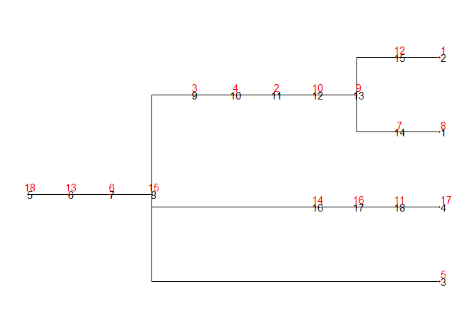
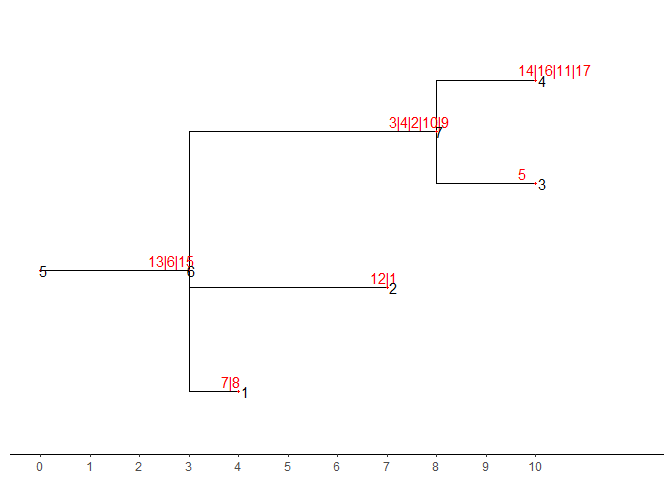

The goal of converTree is to convert tree format among newick, parent vector and ancestor matrix.
Installation
You can install the development version of converTree like so:
devtools::install_github("xiayh17/converTree")Example
This is a basic example which shows you how to solve a common problem:
library(converTree)
## basic example code1. Convert tree format
Functions of these module using Rcpp that convert tree format is a interface of R for code from https://github.com/cbg-ethz/infSCITE. Convert tree format among newick, parent vector and ancestor matrix. convert like so:
## parent vector > child list > nwk
p = c(11, 2, 3, 14, 14, 16, 8, 6, 9, 1, 15, 8, 10, 14, 5, 13, 17)
cl = getChildListFromParentVector(p,16)
childList2nwk(list = cl,n = 16)
## parent vector > nwk
parentVector2nwk(parents=p,n = 16)
## parent vector > anc
parentVector2anc(parents=p,n = 16)
## anc > parent vector
anc <- parentVector2anc(parents=p,n = 16)
anc2parentVector(anc=anc,n=16)
## anc > nwk
anc2nwk(anc=anc,n=16)2. Stack mutation tree
Stack mutations in branch and set branch length to number of mutations.
- Here is a normal mutation tree
suppressMessages(library(ggtree))
library(converTree)
nwk_text = "((((((((((8)7,(1)12)9)10)2)4)3,5,(((17)11)16)14)15)6)13)18;"
tre <- treeio::read.newick(text = nwk_text)
ggtree(tre) +
geom_nodepoint(size = 1,color = "red",shape = 20) +
geom_nodelab(color = "red",nudge_y = 0.1)+
geom_nodelab(aes(label = node))+
geom_tippoint(size = 1,color = "red",shape = 20)+
geom_tiplab(color = "red",nudge_y = 0.1)+
geom_tiplab(aes(label = node))
- Here is a tree after stack
stre <- stack_mutationTree(tre)
ggtree(stre)+
geom_nodepoint(size = 1,color = "red",shape = 20) +
geom_nodelab(color = "red",nudge_y = 0.1,nudge_x = -0.4)+
geom_nodelab(aes(label = node))+
geom_tippoint(size = 1,color = "red",shape = 20)+
geom_tiplab(color = "red",nudge_y = 0.1,nudge_x = -0.4)+
geom_tiplab(aes(label = node))+
theme_tree2()+
scale_x_continuous(breaks = c(0:10), limits = c(0,12))
You’ll still need to render README.Rmd regularly, to keep README.md up-to-date. devtools::build_readme() is handy for this. You could also use GitHub Actions to re-render README.Rmd every time you push. An example workflow can be found here: https://github.com/r-lib/actions/tree/v1/examples.